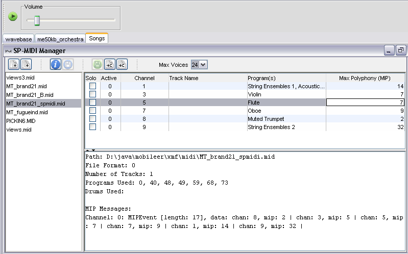

|
Mobileer Instrument Editor
CONFIDENTIAL and PROPRIETARY - © 2002-6 Mobileer Inc.
|
Mobileer Song Editor
Selecting Songs in the Song Editor
You can load individual songs into the Song Editor or load all of the songs in a folder.
- To add a song to the playlist click the one of the add file buttons and select a Standard MIDI File. The "add multiple" button will load any MIDI files it finds in the directory you select.
- To edit or preview a song, select it from the list as shown.
- The icon with an "i" will generate a report on the instruments used or unused by all of the songs.

| Top | Previous | Next |